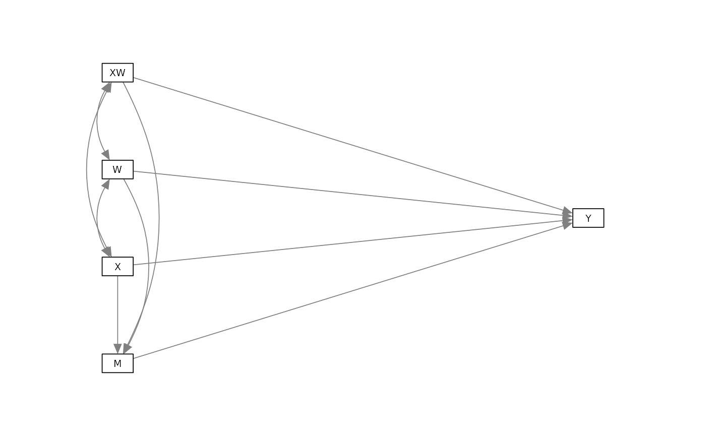

Moderated mediation and mediated moderation using rmedsem
Source:vignettes/articles/moderated_mediation.Rmd
moderated_mediation.RmdIt is often of interest to assess whether a mediation effect is invariant across contexts, or whether its strength depends on the level of another variable. In such cases, the indirect effect of an independent variable on an outcome via a mediator is moderated by a third variable (the moderator). These types of effects are often referred to as moderated mediation or mediated moderation effects (Preacher et al., 2007).
Currently, rmedsem implements moderated mediation and
mediated moderation. Mediated moderation is available for cases
corresponding to “Model 2” from Preacher et al., 2007 shown in the
following graph:

Mathematically, this model can be specified as
where is the independent variable, is the dependent variable, is the mediator, and is the moderator. The interaction term is included in the equations for and .
To estimate moderated mediation and mediated moderation with
rmedsem, we need to specify the model using the modsem package which allows
to estimate structural equation models with interaction terms using
lavaan. We specify and estimate the following model
(corresponding to the conceptual model above) using the dataset
rmedsem::mchoice:
library(modsem)
model <- "
OwnLook =~ smv_attr_face + smv_attr_body + smv_sexy
SelfEst =~ ses_satis + ses_qualities + ses_able_todo
MentWell =~ mwb_optimistic + mwb_useful + mwb_energy
OwnPers =~ smv_kind + smv_caring + smv_understanding +
smv_make_laughh + smv_funny + smv_sociable
MentWell ~ OwnLook + SelfEst + OwnPers + OwnPers:OwnLook
SelfEst ~ OwnLook + OwnPers + OwnPers:OwnLook
"
est <- modsem(model, data = rmedsem::mchoice, method="lms")Mediated Moderation
Mediated moderation treats the interaction term
X:W as the independent variable and asks whether its effect
on Y is carried through M. In our example, we
can test whether the interaction between OwnLook and
OwnPers on MentWell is mediated by
SelfEst.
library(rmedsem)
rmedsem(indep="OwnPers:OwnLook", dep="MentWell", med="SelfEst", mod=est)
#> Significance testing of indirect effect (standardized)
#> Model estimated with package 'modsem'
#> Mediation effect: 'OwnPers:OwnLook' -> 'SelfEst' -> 'MentWell'
#>
#> Sobel Delta Monte-Carlo
#> Indirect effect -0.0704 -0.0704 -0.0704
#> Std. Err. 0.0188 0.0187 0.0183
#> z-value -3.7444 -3.7551 -3.8661
#> p-value 0.000181 0.000173 0.000111
#> CI [-0.107, -0.0335] [-0.107, -0.0336] [-0.108, -0.036]
#>
#> Baron and Kenny approach to testing mediation
#> STEP 1 - 'OwnPers:OwnLook:SelfEst' (X -> M) with B=-0.135 and p=0.000
#> STEP 2 - 'SelfEst:MentWell' (M -> Y) with B=0.521 and p=0.000
#> STEP 3 - 'OwnPers:OwnLook:MentWell' (X -> Y) with B=-0.007 and p=0.852
#> As STEP 1, STEP 2 and the Sobel's test above are significant
#> and STEP 3 is not significant the mediation is complete.
#>
#> Zhao, Lynch & Chen's approach to testing mediation
#> Based on p-value estimated using Monte-Carlo
#> STEP 1 - 'OwnPers:OwnLook:MentWell' (X -> Y) with B=-0.007 and p=0.852
#> As the Monte-Carlo test above is significant and STEP 1 is not
#> significant there indirect-only mediation (full mediation).
#>
#> Effect sizes
#> RIT = (Indirect effect / Total effect)
#> Total effect 0.078 is too small to calculate RIT
#> RID = (Indirect effect / Direct effect)
#> (0.070/0.007) = 9.561
#> That is, the mediated effect is about 9.6 times as
#> large as the direct effect of 'OwnPers:OwnLook' on 'MentWell'Moderated Mediation
Moderated mediation asks whether the indirect effect of an
exposure X on outcome Y via mediator
M varies across levels of a third variable
W.
Using the model from the previous example, we test how the indirect path
from OwnLook to MentWell through
SelfEst depends on OwnPers.
rmedsem(indep="OwnLook", dep="MentWell", med="SelfEst", mod=est,
moderator="OwnPers")
#> Significance testing of indirect effect (standardized)
#> Model estimated with package 'modsem'
#> Mediation effect: 'OwnLook' -> 'SelfEst' -> 'MentWell'
#>
#> Sobel Delta Monte-Carlo
#> Indirect effect 0.2539 0.2539 0.254
#> Std. Err. 0.0358 0.0365 0.036
#> z-value 7.1025 6.9626 7.111
#> p-value 1.23e-12 3.34e-12 1.15e-12
#> CI [0.184, 0.324] [0.182, 0.325] [0.191, 0.33]
#>
#> Baron and Kenny approach to testing mediation
#> STEP 1 - 'OwnLook:SelfEst' (X -> M) with B=0.487 and p=0.000
#> STEP 2 - 'SelfEst:MentWell' (M -> Y) with B=0.521 and p=0.000
#> STEP 3 - 'OwnLook:MentWell' (X -> Y) with B=0.011 and p=0.835
#> As STEP 1, STEP 2 and the Sobel's test above are significant
#> and STEP 3 is not significant the mediation is complete.
#>
#> Zhao, Lynch & Chen's approach to testing mediation
#> Based on p-value estimated using Monte-Carlo
#> STEP 1 - 'OwnLook:MentWell' (X -> Y) with B=0.011 and p=0.835
#> As the Monte-Carlo test above is significant and STEP 1 is not
#> significant there indirect-only mediation (full mediation).
#>
#> Effect sizes
#> RIT = (Indirect effect / Total effect)
#> (0.254/0.265) = 0.958
#> Meaning that about 96% of the effect of 'OwnLook'
#> on 'MentWell' is mediated by 'SelfEst'
#> RID = (Indirect effect / Direct effect)
#> (0.254/0.011) = 22.585
#> That is, the mediated effect is about 22.6 times as
#> large as the direct effect of 'OwnLook' on 'MentWell'
#>
#> Direct moderation effects
#> SelfEst -> OwnLook | OwnPers: B = -0.135, se = 0.034, p = 0.000
#> MentWell -> OwnLook | OwnPers: B = -0.007, se = 0.040, p = 0.852
#>
#> Indirect moderation effect
#> SelfEst -> OwnLook | OwnPers: B = -0.070, se = 0.019, p = 0.000
#>
#> Total moderation effect
#> SelfEst -> OwnLook | OwnPers: B = -0.078, se = 0.038, p = 0.041In this case the difference between a moderated mediation and mediated moderation is purely semantic. Indeed, the indirect and total moderation effect when interpreted as a moderated mediation is the exact same as the indirect and total effect in the previous example ( and ).
That being said, moderated mediations can be more complex in nature
than mediated moderations, where the moderating variable W
can affect the paths of model differently. Here we can for example see a
moderated mediation where OwnPers not only affects the path
from OwnLook to SelfEst and
OwnLook to MentWell, but also the path from
SelfEst to MentWell.
model2 <- "
OwnLook =~ smv_attr_face + smv_attr_body + smv_sexy
SelfEst =~ ses_satis + ses_qualities + ses_able_todo
MentWell =~ mwb_optimistic + mwb_useful + mwb_energy
OwnPers =~ smv_kind + smv_caring + smv_understanding +
smv_make_laughh + smv_funny + smv_sociable
SelfEst ~ OwnLook + OwnPers + OwnPers:OwnLook
MentWell ~ OwnLook + SelfEst + OwnPers + OwnPers:OwnLook + OwnPers:SelfEst
"
est2 <- modsem(model2, data = rmedsem::mchoice, method="lms")rmedsem() will automatically detect the paths wich are
moderated by the moderator and tailor the output
accordingly.
rmedsem(indep="OwnLook", dep="MentWell", med="SelfEst", mod=est2,
moderator="OwnPers")
#> Significance testing of indirect effect (standardized)
#> Model estimated with package 'modsem'
#> Mediation effect: 'OwnLook' -> 'SelfEst' -> 'MentWell'
#>
#> Sobel Delta Monte-Carlo
#> Indirect effect 0.2472 0.2472 0.247
#> Std. Err. 0.0401 0.0362 0.037
#> z-value 6.1646 6.8350 6.603
#> p-value 7.07e-10 8.2e-12 4.03e-11
#> CI [0.169, 0.326] [0.176, 0.318] [0.177, 0.32]
#>
#> Baron and Kenny approach to testing mediation
#> STEP 1 - 'OwnLook:SelfEst' (X -> M) with B=0.488 and p=0.000
#> STEP 2 - 'SelfEst:MentWell' (M -> Y) with B=0.507 and p=0.000
#> STEP 3 - 'OwnLook:MentWell' (X -> Y) with B=0.031 and p=0.622
#> As STEP 1, STEP 2 and the Sobel's test above are significant
#> and STEP 3 is not significant the mediation is complete.
#>
#> Zhao, Lynch & Chen's approach to testing mediation
#> Based on p-value estimated using Monte-Carlo
#> STEP 1 - 'OwnLook:MentWell' (X -> Y) with B=0.031 and p=0.622
#> As the Monte-Carlo test above is significant and STEP 1 is not
#> significant there indirect-only mediation (full mediation).
#>
#> Effect sizes
#> RIT = (Indirect effect / Total effect)
#> (0.247/0.278) = 0.889
#> Meaning that about 89% of the effect of 'OwnLook'
#> on 'MentWell' is mediated by 'SelfEst'
#> RID = (Indirect effect / Direct effect)
#> (0.247/0.031) = 8.023
#> That is, the mediated effect is about 8.0 times as
#> large as the direct effect of 'OwnLook' on 'MentWell'
#>
#> Direct moderation effects
#> SelfEst -> OwnLook | OwnPers: B = -0.137, se = 0.045, p = 0.002
#> MentWell -> SelfEst | OwnPers: B = 0.084, se = 0.055, p = 0.128
#> MentWell -> OwnLook | OwnPers: B = -0.077, se = 0.056, p = 0.171
#>
#> Indirect moderation effect
#> SelfEst -> OwnLook | OwnPers: B = -0.040, se = 0.035, p = 0.252
#>
#> Total moderation effect
#> SelfEst -> OwnLook | OwnPers: B = -0.117, se = 0.053, p = 0.027